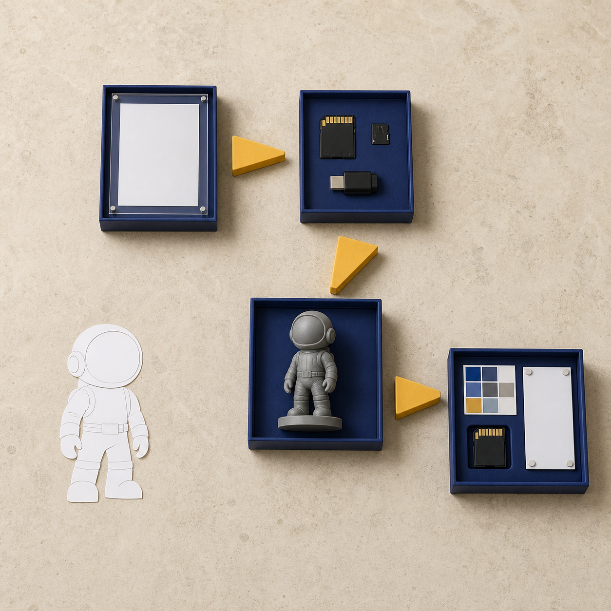
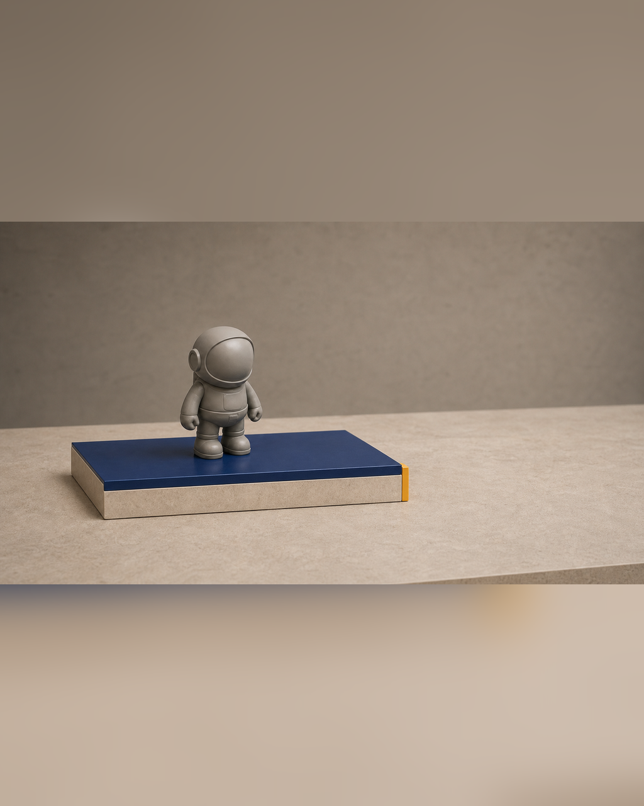

五天能不能做完：基础、标准、进阶三种出口
“五天能不能做完”如果只用是否得到一件精修成品来回答，会把不同起点、尺寸和结构复杂度的项目强行放进同一标准。有人已经有完整角色资产，有人只有想法、草图或初步设定；有的项目适合完整立体，有的更适合局部样、浮雕或结构验证。若不先定义出口，时间会被不受控的细节持续占用。
具体问题
“五天能不能做完”如果只用是否得到一件精修成品来回答，会把不同起点、尺寸和结构复杂度的项目强行放进同一标准。有人已经有完整角色资产，有人只有想法、草图或初步设定；有的项目适合完整立体，有的更适合局部样、浮雕或结构验证。若不先定义出口，时间会被不受控的细节持续占用。
真正需要解决的是：五天结束时，哪些文件、验证样、记录与表达资料必须真实存在，哪些项目可以继续增加涂装、包装方向和页面完成度，哪些项目应该及时缩小范围。完成等级必须能够被检查，也必须给下一阶段留下清楚入口，而不是靠“做完了”三个字概括。
核心判断
基础、标准、进阶三种出口不是优劣排名，而是范围与证据的组合。基础出口先保住项目卡、版权边界、受控模型或方向文件，以及一次能回答关键问题的数字或实体验证；标准出口进一步贯通 GLB、STL、灰模或局部样、基础表达和可维护页面；进阶出口只在前序 Gate 稳定、排程仍有余量时增加更完整的修正、涂装、包装方向与发布资料。
判断出口时应看四类证据：文件或实物是否真实存在，用途是否清楚，名称与版本是否彼此对应，下一阶段能否直接继续。方向稿、示意图、灰模和页面草稿都可以成为阶段成果，但必须按真实状态命名；它们不能被改写成已经完成的商品、正式展览或销售结果。
步骤或标准
可以用下面六项检查确定当前出口。每次通过、退回或降级都要留下版本与问题记录。
- 锁定范围：只选一个主要用途、一个主方案和五天内必须回答的关键问题，同时写出备选与降级出口。
- 检查 Gate 1：核对版权、视觉输入、预计尺寸、结构复杂度和工艺预判；缺项未补齐时不得提前进入更高出口。
- 检查 Gate 2：核对受控源模型、GLB、STL、真实尺寸、厚度、连接、重心、拆件与可支撑性，并保存验证记录。
- 检查 Gate 3：用灰模、局部样或小尺寸样回答结构、装配和细节问题，据此决定继续涂装、保留灰模或缩小出口。
- 检查 Gate 4：核对信息、版权、图片和成果描述，确认方向稿、灰模、包装草稿与页面草稿均按真实状态标注。
- 填写出口验收表：逐项记录文件位置、版本、完成状态、未完成项与下一阶段；不以实体件数或精修程度单独判断。
常见错误
以下错误会把完成等级变成无法核验的口号。
- 开课前就把进阶出口当作人人相同的承诺；后果是复杂项目挤占修正与验证时间，基础链路反而没有闭合。
- 只看最后实体样，不检查项目卡、版本、GLB / STL 和问题记录；后果是成果无法追踪，课后难以稳定修正、重打或协作。
- Gate 未通过仍继续涂装、包装或发布；后果是结构、版权与版本问题被带入成本更高的阶段。
- 把局部样、灰模、方向稿或网页草稿描述成完整成品；后果是事实边界失真，误导展示、合作与报名判断。
- 把降级出口理解为失败；后果是拒绝缩小范围，最后可能没有任何可验证、可继续的结果。
与五天课程的关系
这一主题横跨 Day 1 至 Day 5。Day 1 在 Gate 1 锁定项目卡、版权、视觉输入、尺寸、工艺预判及主 / 备 / 降级方案；Day 2 在 Gate 2 核对人工修正模型、GLB、STL、厚度、连接、重心、拆件与可支撑性；Day 3 在 Gate 3 用灰模、局部样或小尺寸样完成第一次实体验证，并决定继续、保留或降级。
Day 4 通过 Gate 4 核对涂装、包装方向、产品信息、图片、版权和成果描述，Day 5 再把当前真实出口整理进独立站、GLB 在线展示、平台文案与 30 天推广计划。完成本阶段后，下一阶段是课后 30 天迭代：按问题清单修正模型、补充素材、完善页面，再评估正式包装、批量复制、展览或销售准备是否值得继续。
事实 / 案例 / 完成度边界
本文依据课程公开的五天安排、四个 Gate 和结课成果包整理。当天计划图片中的检查台、文件、灰模、色板、包装方向件和页面设备均为课程方法示意，不是学员案例、真实委托成果，也不代表直播、课堂、制作或结课已经发生。真实案例只有在来源、授权、版本、制作状态和完成度可核验时才能单独标注；示意图不能替代真实案例。
基础、标准、进阶是范围与证据出口，不是价格等级，也不保证每个项目得到相同件数、尺寸或精度。五天内的完成度受起点、结构复杂度、尺寸、设备、材料、打印排程和修正次数影响。课程不承诺人人完成商业级精修、一次打印成功、正式包装印刷、批量生产、正式展览、授权成交或销售。
报名入口
如果你已有 IP / 角色资产，可以在报名资料中说明现有原画、角色设定或三维文件，以及最希望保留的辨识点、实体用途和期待的完成出口；课程会按真实范围和 Gate 证据判断，不要求所有项目统一进入进阶出口。
如果你只有想法、草图或初步设定，也可以如实说明故事、参考方向、希望做成的物品和现有设备，不需要先伪造成熟项目。两类起点进入同一条五天生产链。公开报名地址：https://wj.qq.com/s2/27296919/9499/


课程时间：2026 年 10 月 2 日至 10 月 6 日｜青岛｜每班限 10 人
填写报名资料 →